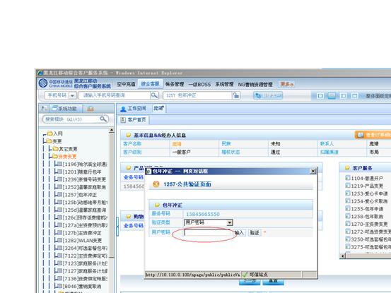

1、进入方式
在“请输入手机号码查询”处输入客户的手机号码，点击查询按钮，点击综合客服-资费变更-包年冲正，或在“快速转入”处输入代码1257进入包年冲正界面，点击“回车”确定。
2、界面形式及操作步骤说明
（1）在“请输入手机号码查询”处输入客户的手机号码，点击查询按钮，点击综合客服-资费变更-包年冲正，或在“快速转入”处输入代码1257包年冲正，点击“回车”确定。 （2）点击“输入”，由客户通过密码小键盘输入服务密码。
（2）点击“输入”，由客户通过密码小键盘输入服务密码。

（3）进入包年冲正界面，点击“查询”。
（4）客户订单列表显示当天所操作包年申请详细信息，点击“确认&打印”。

（5）根据客户本次是否办理多个业务，点击“打印”或“合并打印”或“打印存储”。
（6）点击“确定”提交本次操作。